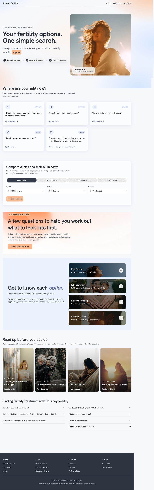
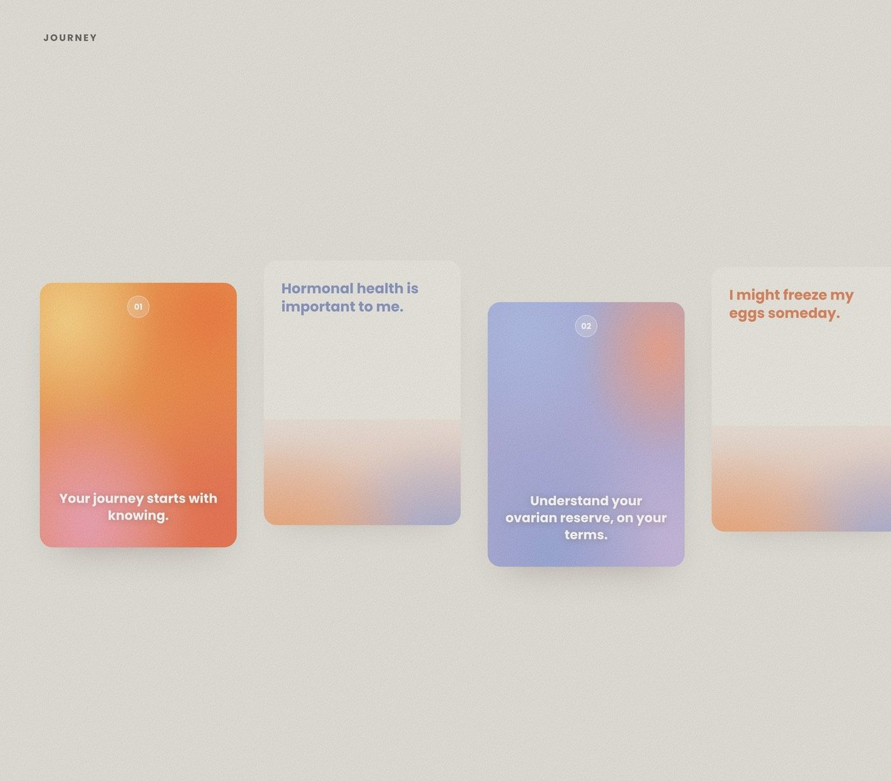
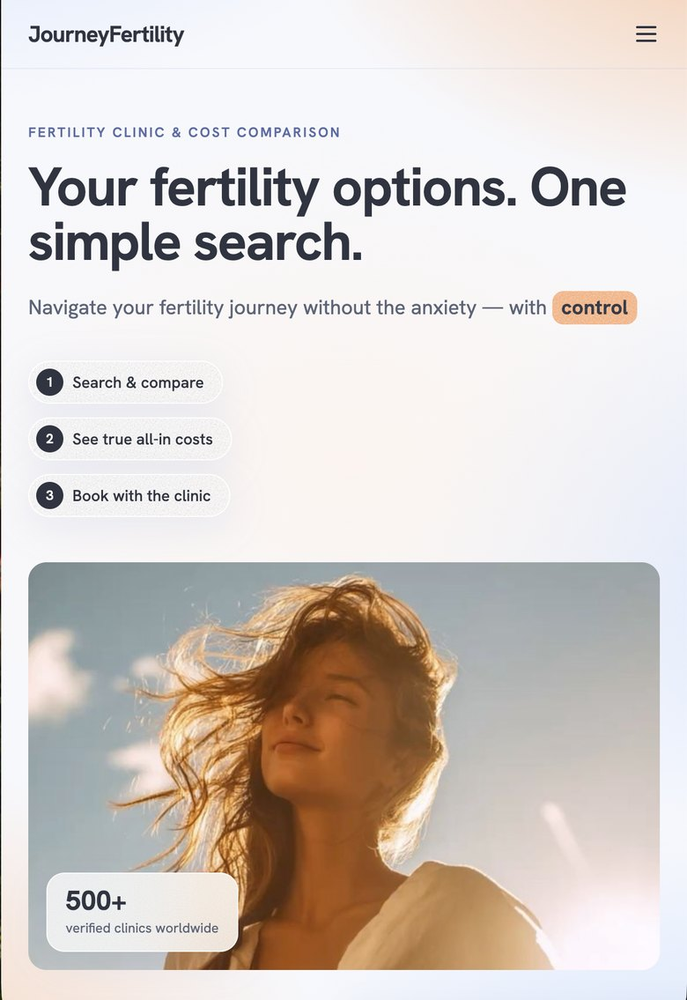

Research · Product · Brand: Fertility
Fertility care asks people to spend thousands and decide something life shaping, on almost no clear information. I designed Journey as the warm, straight talking guide I wished existed: one place to search clinics, compare costs and see the true all in price, at home or abroad. I led the research, product and brand, end to end.
The challenge
Fertility care runs into thousands of pounds and reshapes a life, yet people choose almost blind. Quotes swing wildly between clinics and countries, the real total hides behind a tidy "from" price, and every route, a test, egg freezing, IVF, embryos, sits in its own lonely corner of the web. So the research happens at midnight: forum threads, pushy discovery calls, half finished spreadsheets. Journey's whole reason to exist is to turn that scramble into one clear, honest view.

Journey · Search. The live product: search and compare fertility clinics and their true, all in costs, side by side.
My approach
I started with people, long before pixels: mapping the real route from first worry to first booking, reading the market clinic by clinic to hear how it speaks to anxious people, following the money to see what a "from" price hides, and listening for the tone people were missing, a steady friend, not a clipboard. That research narrowed to one promise: an honest, comparable view that steadies people instead of selling to them. Search, true cost and compare became the spine, with a plain spoken way in for whoever's arriving, wherever they are. The Journey identity, name, palette, voice, carried that same warmth the whole way through.

Brand in use. Soft, drifting gradients, coral into amber into periwinkle, let a clinical subject feel like something you can meet on your own terms.
What I built
The live product opens on one search across 500+ verified clinics worldwide, no sign up wall, no funnel. A dedicated true cost view breaks the number that usually hides, treatment, medication, consultation, storage, into one honest all in total. A compare view lines clinics up across cities and countries side by side, so travel and cost become a clear choice instead of a leap of faith. And instead of a filter wall, a single plain question, "where are you right now?", tailors the rest.

True cost & compare. The same treatment, priced honestly, across cities and countries.
Outcome
"The goal, in five words: fertility, without the fog."